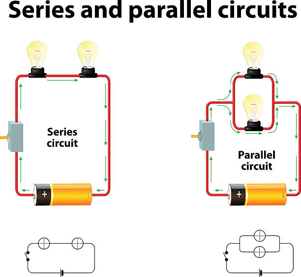
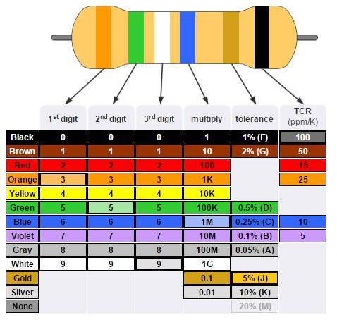
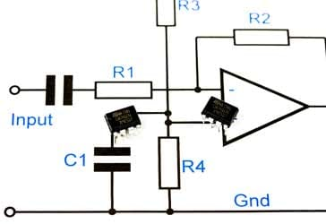
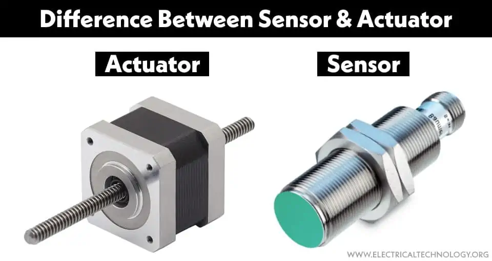
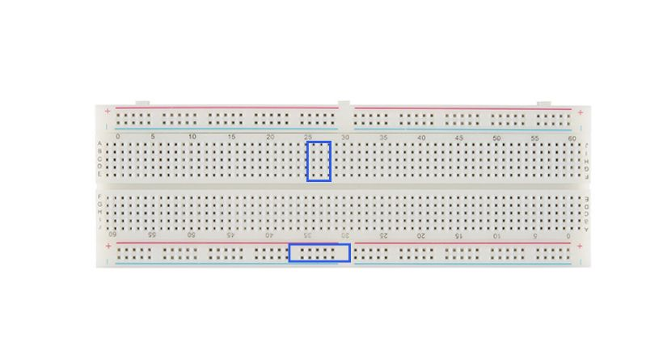
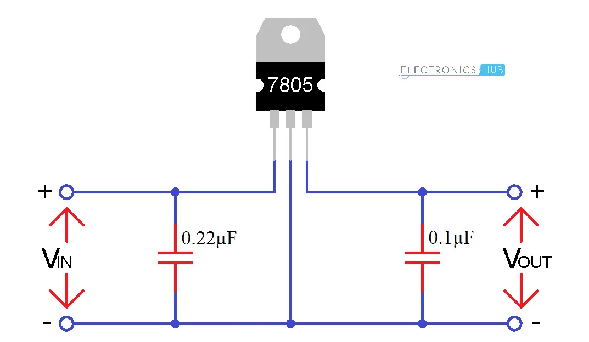

Basic Electronics — From Fundamentals to Practical Projects
Module 1: Introduction to Electronics
This module explains what electronics is, why it's important, and the difference between electronics and electrical engineering. Electronics focuses on the control of electrons in semiconductors and circuits at low voltages and currents. You'll learn common applications — consumer gadgets, sensors, embedded systems, and communications.
Learning outcomes: understand the role of components, basic circuit behavior, and the typical workflow of designing and testing a circuit.
Fun fact: The first electronic computer used vacuum tubes — modern devices use semiconductor transistors that are smaller, faster, and more reliable.
Module 2: Basic Electrical Concepts — Voltage, Current, Resistance, Power
These are the core quantities you will measure and manipulate in every circuit.
- Voltage (V): the potential difference between two points (think of it as electrical pressure).
- Current (I): the flow of electric charge measured in amperes (A).
- Resistance (R): opposition to current flow; measured in ohms (Ω).
- Power (P): rate of energy transfer measured in watts (W).
P = V × I.
Practical example: A 9 V battery powering a small LED circuit that draws 10 mA consumes P = V × I = 9 × 0.01 = 0.09 W, so a tiny fraction of the battery capacity.
Module 3: Ohm’s Law and Basic Calculations
Ohm's Law relates voltage (V), current (I) and resistance (R):
V = I × RUse Ohm's Law to compute component values and verify safe operating points.
Worked example: You have a 5 V supply and an LED that needs 2 mA. To find the resistor: R = V / I = (5 - V_led) / I. If LED forward voltage is 2 V, resistor = (5 - 2) / 0.002 = 1500 Ω (1.5 kΩ).
Include a simple calculation table and show how to convert mA ↔ A, kΩ ↔ Ω when doing arithmetic.
Module 4: Series and Parallel Circuits
Understand how components behave when connected in series vs parallel — affects current, voltage, and total resistance.
- Series: same current through each component; resistances add:
R_total = R1 + R2 + ... - Parallel: same voltage across each branch; reciprocal rule:
1/R_total = 1/R1 + 1/R2 + ...
Practical lab: Build a series LED string and a parallel LED array on a breadboard. Measure voltage across and current through each LED using a multimeter; observe brightness changes when adding/removing LEDs.
Module 5: Resistors — Types, Color Codes, and Applications
Resistors limit current and divide voltages. We'll cover fixed resistors (carbon film, metal film), variable resistors (potentiometers), and power resistors.
Color code
How to read resistor bands (4-band and 5-band). Provide a small interactive table or visual reference image (placeholder below).
Practical example: Build a simple voltage divider to convert 9 V to 5 V approximate for a sensor. Demonstrate calculation and measured vs theoretical results.
Module 6: Capacitors and Inductors — Storage and Filtering
Capacitors store charge and are used for filtering, timing, and coupling signals. Inductors store energy in magnetic form and appear in power supplies and filters.
Capacitor types:
- Electrolytic (polarized) — high capacitance, watch polarity.
- Ceramic — small, non-polarized, good for high-frequency decoupling.
Practical example: Build an RC low-pass filter and measure the cutoff frequency. Use formula f_c = 1 / (2πRC) to predict behavior and verify with a signal generator or Arduino PWM.
Module 7: Diodes and LEDs
Diodes enforce one-way current flow. Key concepts: forward voltage drop, reverse breakdown, and diode orientation.
LEDs are diodes that produce light — they require a current-limiting resistor to prevent damage.
Practical example:
- Connect an LED with a 470 Ω resistor to 5 V; measure forward current.
- Build a simple rectifier (bridge diode) to convert AC → DC and add a smoothing capacitor; measure ripple voltage.
Module 8: Transistors — BJT and MOSFET Basics
Transistors are three-terminal devices used as switches and amplifiers.
- BJT (Bipolar Junction Transistor): NPN and PNP types — control current using base current.
- MOSFET: Voltage-controlled; common in power switching.
Practical lab: Use an NPN transistor as a low-side switch to control a motor or LED with a microcontroller. Explain base resistor, saturation, and safe operating area.
# Example circuit description (not code):
Microcontroller GPIO -> 1kΩ -> Base (NPN)
Emitter -> GND
Collector -> Motor -> +V (with flyback diode across motor)

Module 9: Operational Amplifiers (Op-Amps) — Concepts & Simple Circuits
Op-amps are versatile building blocks used for amplification, filtering, comparisons, and mathematical operations.
Covering: inverting amplifier, non-inverting amplifier, voltage follower (buffer), and comparator basics.
Practical example: Build a non-inverting amplifier with gain = 1 + (R2/R1) and verify the amplification of a small audio signal.
Module 10: Sensors and Actuators — Interfacing the Physical World
Sensors convert physical quantities (light, temperature, distance) into electrical signals. Actuators (motors, speakers, relays) perform actions.
- LDR: Light sensor; changes resistance with light.
- Thermistor / LM35: Temperature sensors with analog outputs.
- Ultrasonic: Distance measurement (HC-SR04).
Practical example: Build an automatic night light: read LDR on an analog input, use threshold to turn an LED on/off via a transistor or relay.
Module 11: Breadboard, Wiring, and Prototyping Methods
How to read a breadboard layout, proper wiring, and best practices to avoid common mistakes (loose connections, short circuits).
Include a labelled breadboard image and step-by-step example: assembling an LED + resistor + switch circuit on a breadboard.
Module 12: Measuring Tools — Multimeter and Oscilloscope Essentials
How to use a digital multimeter (DMM) to measure voltage, current, resistance, diode drop, and continuity. Practical tips: start with voltage, then check continuity, then measure current (in series) with correct range.
Oscilloscope basics: visualize time-domain signals, measure amplitude, frequency, and observe noise or glitches.
Practical lab: Use a multimeter to verify a battery voltage, test an LED, and measure the output of an RC filter. If you have access to an oscilloscope, view PWM signals and observe the filtered analog output.
Module 13: Power Supplies, Batteries, and Voltage Regulation
Understand regulated vs unregulated supplies, linear regulators (e.g., 7805), and switching regulators (buck converters).
Explain thermal considerations and decoupling capacitors near ICs for stable operation.
Practical example: Use a 9 V adapter and a 7805 regulator to produce 5 V; add input/output capacitors as datasheet suggests and measure stability under load.
Module 14: Digital Electronics — Logic Gates, Truth Tables, and Combinational Logic
Introduce binary, logic levels (TTL/CMOS), basic gates (AND, OR, NOT, NAND, NOR, XOR), and truth tables.
Explain how to implement simple combinational logic (e.g., half-adder, multiplexer) using gates or using a microcontroller for more flexibility.
Truth table example (AND):
A B | A AND B
0 0 | 0
0 1 | 0
1 0 | 0
1 1 | 1
Practical lab: Build a simple logic circuit on a breadboard using IC chips (e.g., 7408 AND gate) or simulate in free tools like Logisim or Tinkercad.
Module 15: Microcontrollers — Introduction to Arduino
Why microcontrollers? They read sensors, run logic, and control actuators. Arduino is an accessible platform for beginners with a simple IDE, extensive libraries, and huge community support.
Basic workflow: write sketch → compile → upload → monitor serial output.
// Arduino example: blink LED
void setup() {
pinMode(13, OUTPUT);
}
void loop() {
digitalWrite(13, HIGH);
delay(500);
digitalWrite(13, LOW);
delay(500);
}
Practical project: Use Arduino to read an LDR (analog) and switch an LED via a transistor when it becomes dark — include wiring diagram and code comments.
Module 16: Soldering, PCBs, and Permanent Assembly
When breadboard prototypes are stable, you can make permanent assemblies. Cover through-hole soldering technique, SMD basics, and designing simple PCBs (using free tools like KiCad).
Safety and quality: proper solder joints look shiny and concave; avoid cold joints and bridges.
Practical exercise: Solder a small LED module onto perfboard; clean flux and test circuit under power.
Module 17: Safety, Best Practices, and Troubleshooting
Essential safety: disconnect power before re-wiring, use current-limited supplies, and respect mains electricity — do not experiment with mains until trained.
Troubleshooting methodology: observe → measure → hypothesize → isolate → fix. Keep a lab notebook and label wires/components.
- Correct polarity for capacitors/diodes
- No visible shorts or stray strands
- Appropriate fuse or current limit in place
Module 18: Capstone Projects and Next Steps
Apply your skills with guided capstone projects that combine multiple modules. Each project includes a list of required parts, wiring diagrams, step-by-step assembly instructions, and testing checklists.
Project ideas (increasing difficulty):
- LED Blinker: Breadboard LED + resistor + Arduino (modules 3,5,11,15).
- Light-Activated Night Lamp: LDR + transistor/Arduino to switch lamp (modules 6,10,15).
- Temperature Logger: LM35 + Arduino + SD card (modules 6,10,15).
- Simple Line-Following Robot: IR sensors, motor driver, Arduino (modules 8,10,15).
Next steps: simulate circuits in Tinkercad/Falstad, learn PCB design with KiCad, and explore embedded systems, communications (I2C, SPI, UART), and power electronics.